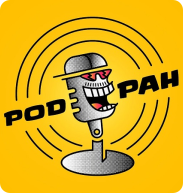

PodPah

1 - Mano Brown (Episódio #351)
2 - Lula (Episódio #295)
3 - MC Ryan SP & MC Daniel (Episódio #480)
4 - Boca de 09 & Racha (Episódio #428)
5 - Mitico & Igão (Especial 1 Milhão - Episódio #55)
6 - Whindersson Nunes (Episódio #312)
7 - Casimiro Miguel (Episódio #335)
Sobre
O Podpah é o maior podcast brasileiro, criado em 2020 e apresentado por Igor Cavalari (Igão) e Thiago Marques (Mítico). Conhecido como "o podcast mais zika da internet", o programa traz conversas descontraídas com artistas, atletas, músicos e influenciadores. Entrevistas livres, quadros especiais e cortes de humor dentro do MusicHub